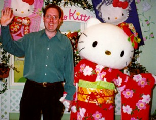

|  |
Bill Foote(I'm the one on your left.)E-mail: bill.foote @ sun.com |
| I'm currently working on the Java TV architecture and standards group. I specialize in application lifecycle, resource management, java security issues, content production consulting, and frequent flyer miles. |
Previously, I worked in the EmbeddedJava/PersonalJava group. I did some standards work for the Real Time Extensions for the JavaTM Platform.
Before that, I worked on browser-related technologies. I lead the engineering effort for the Personal WebAccess HTML Component. This work was mostly concentrated on making the browser run well in low-memory environments.
As part of this work, I created the Heap Analysis Tool, a tool for exploring the object topology of a heap snapshot. I hacked a prototype heap snapshot into JDK 1.1.x, and Sheng Liang and Deepa Viswanathan made it real and integrated it with JDK 1.2's JVMPI (JVM* Profiling Interface).
I just noticed! It looks like the web team has set up a script that adds stuff to the end of my homepage. As I write this, their message of the day seems to relate to trademark issues. Anyway, the following has been automatically added for your browsing pleasure:
*As used on this web site, the terms "Java virtual machine" or "JVM" mean a virtual machine for the Java platform.